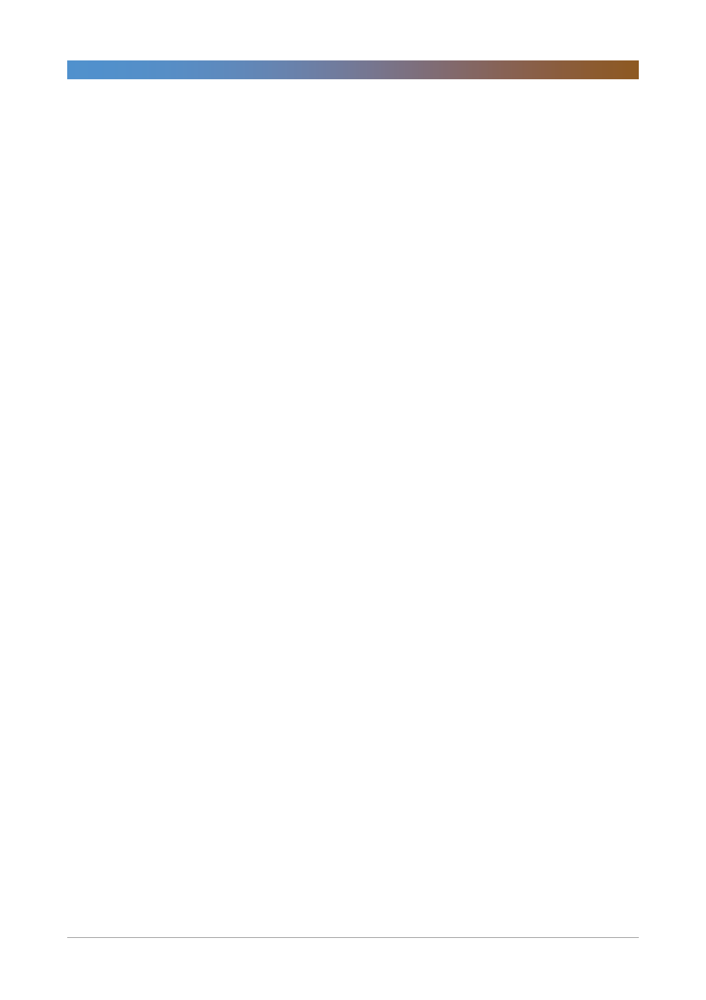

현대중공업지주(267250)
- Captive 라 부를 수 있는 시장은 선박 및 엔진 시장. 전세계에서 운항되는
선박의 14%, 선박 엔진의 24%, 힘센 엔진 10.986대가 현대글로벌서비스의
잠재 captive 시장임
- 2017년 기준 현대중공업 그룹이 건조한 선박은 3,117척, 메인 엔진은
4,030대임(사용연한 15년 미만)
- 글로벌 메인 엔진은 엔진 제조사인 현대중공업과 라이선세 제조업체가
A/S 를 과점함
- 힘센엔진은 현대중공업이 자체 개발했기에 현대글로벌서비스가 A/S 권한을
독점 보유함
- 이외 그룹사(현대중공업, 현대일렉트릭)가 제작하는 기자재(대형엔진,
중형엔진, 전장품 BWTS)와 협력사가 제작하는 기자재(엔진 보조기기,
보일러, 기타 등)에서 현대글로벌서비스가 A/S 를 제공 할 수 있음
- 애널리스트 의견: 현대글로벌서비스는 그룹 내 가장 기대되는 미래
수익원이면서 정기선 부사장의 경영능력 입증 과제라는 점에서 설립
두번째인 2018년 적극적 행보 예상
4. 글로벌서비스 친환경 Retrofit 시장
- 현대 BWTS(ballast Water Treatment System) 시장은 17억불, Scrubber
시장은 19억불이나 2021년까지 54억불, 60억불 규모로 성장이 예상됨
- 현대글로벌서비스는 그룹이 자체적으로 개발한 BWTS, Scrubber 에서
독점적 영업
- 선도사 대비 원가 경쟁력이 있는데 BWTS 는 90%, Scrubber 는 75% 수준
- BWTS, Scrubber 은 판매 마진율이 낮은 편이지만 AS 에서 높은 마진을
예상함
5. 선박 AS 업계 선두주자, Wartsila
- 글로벌 선박 AS 업체 Wartsila 의 2017년 말 기준 매출은 6.3조원,
영업이익 6,378억원(수정 영업이익 기준), 영업이익률 12% EBITDA 는
9,077억원, 순이익은 5,290억원
- 선박업계 불황으로 2010년 이후 매출 및 순이익 규모는 현재와 유사하지만,
동기간 시총은 3배 증가해서 13.3조원 수준
- 2017년 Trailing PER 은 27배, Trailing PBR 4.38배에 거래되고 있음
- 현대글로벌서비스의 2022년 목표는 매출 2조원, 영업이익 4,030억원,
영업이익 20%임(설립 초기에는 영업이익 급증 예상되지만, 2022년
중기적으로는 영업이익률 20% 내외로 안정화 될 것)
6. 로봇사업부
- 현대로보틱스의 로봇사업부는 2015년 영업이익률 –1.2%, 2015년 0.5%,
2016년 5.4%, 2017년 8.2%로 수익성이 꾸준히 개선 추세
- 국내 시장에서는 현대차그룹, LG 디스플레이를 주요 고객으로 국내 시장에서
독보적 1위임(국내 MS 60%).
- 생산자동화: 로봇이 로봇을 생산하는 자동화 라인 도입으로 생산직 최소화
- 부품효율화: 노동집약적인 부품 모듈 조립을 외주화해서 원가 절감
- 국내 생산기지 보유로 글로벌 경쟁사 대비 8%+알파(관세+운송비) 원가
경쟁력 보유
3